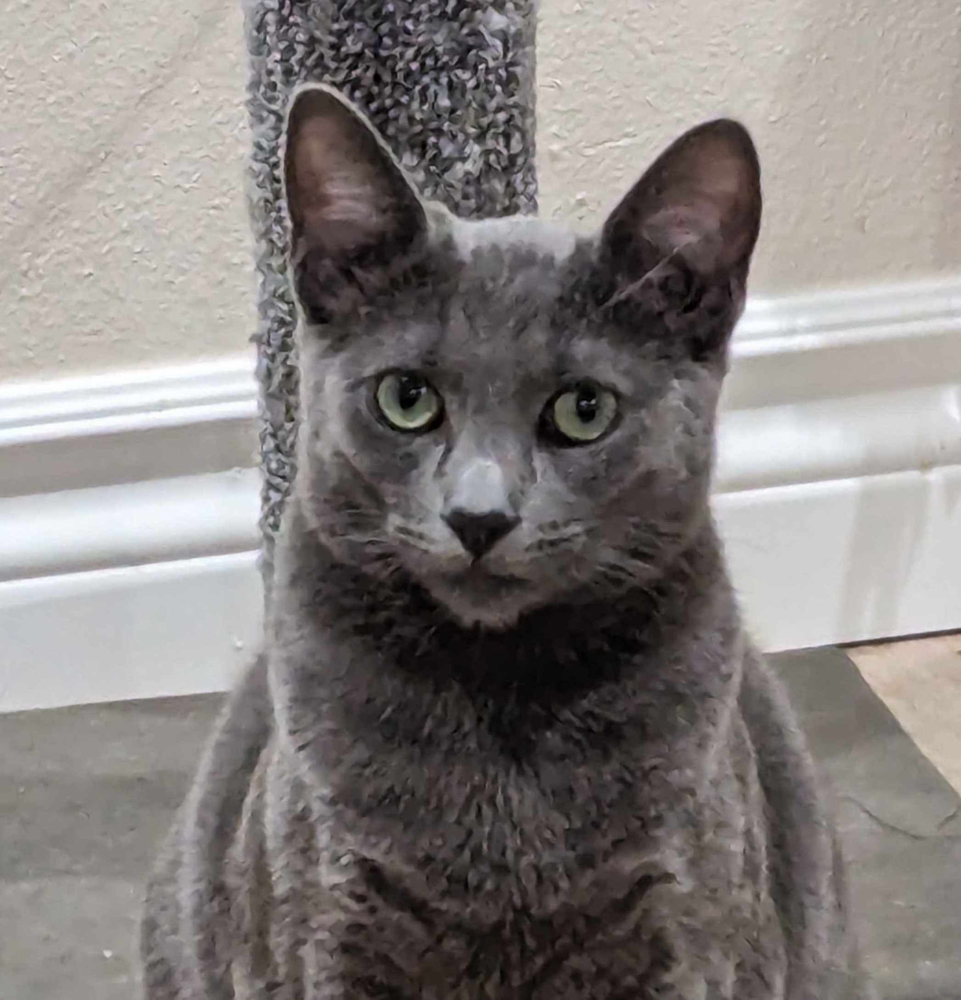

Experience
Pathward, Remote | May 2022 - Present
Working as a software engineer to develop .Net 8 applications, SSIS packages, and SSRS reports.
Working as a software engineer to develop .Net 8 applications, SSIS packages, and SSRS reports.
Calsoft Systems, Torrance | Nov 2018 - Jul
2021
I worked as an application developer to build web applications using MVC 5 .NET framework.
I worked as an application developer to build web applications using MVC 5 .NET framework.
Education
California State University, Long Beach | May
2018
I obtained my Bachelor's of Science from CSULB with a GPA of 3.16.
I obtained my Bachelor's of Science from CSULB with a GPA of 3.16.
Skills
Languages and Technologies
C#, .NET are my strong suits.
Have experience in PowerBI, Java, Java EE, Node.js, Express.js
C#, .NET are my strong suits.
Have experience in PowerBI, Java, Java EE, Node.js, Express.js
Certificates
AWS Certified Cloud Practitioner (2024 - 2027),
Microsoft Certified: Power BI Data Analyst Associate (2024)
Microsoft Certified: Power BI Data Analyst Associate (2024)
Hobbies
My hobbies are all over the place. I juggle between 3 categories.
Games
I play video games most of my spare time. Mostly on Valorant, Ark, or other single player narrative games like RDR2, Cyberpunk, etc.
I play video games most of my spare time. Mostly on Valorant, Ark, or other single player narrative games like RDR2, Cyberpunk, etc.
Drawing
I love drawing but struggle with coloring and it demotivates me to continue this hobby. So I am taking my time to learn the basics of coloring. When I'm slighly satisfy with my work, I post them on Deviant Art.
I love drawing but struggle with coloring and it demotivates me to continue this hobby. So I am taking my time to learn the basics of coloring. When I'm slighly satisfy with my work, I post them on Deviant Art.
Music
I played the piano growing up but haven't touched it in over 15 years! So I unfortunately lost a lot of my practical skills.üòî I also dabbled in other instruments such as the guitar, violin, and erhu (chinese violin), but don't expect much...üòÖ
I played the piano growing up but haven't touched it in over 15 years! So I unfortunately lost a lot of my practical skills.üòî I also dabbled in other instruments such as the guitar, violin, and erhu (chinese violin), but don't expect much...üòÖ
Fun Fact
Proud parent of 6 cats
This is an excuse to show off my cuties!üòÅ
This is an excuse to show off my cuties!üòÅ
Ashe

Shadow
Butter
Chase

Simba
Coconut